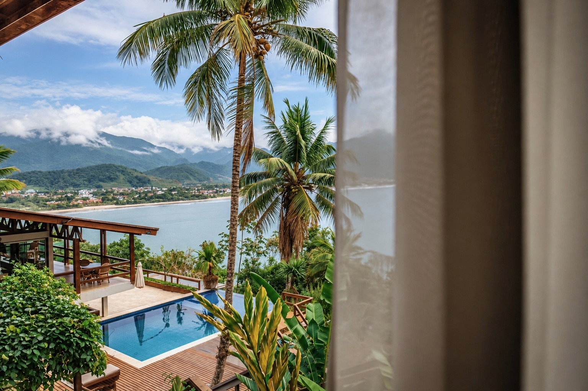
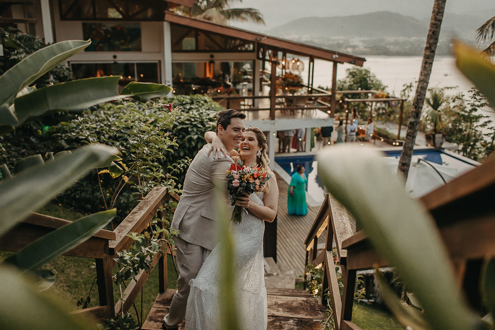
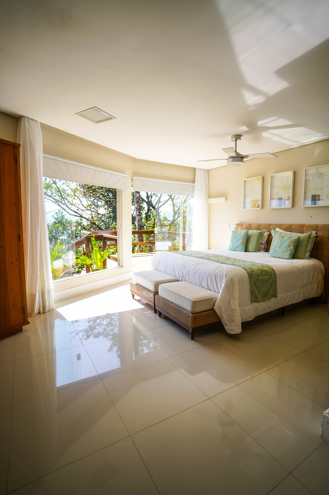
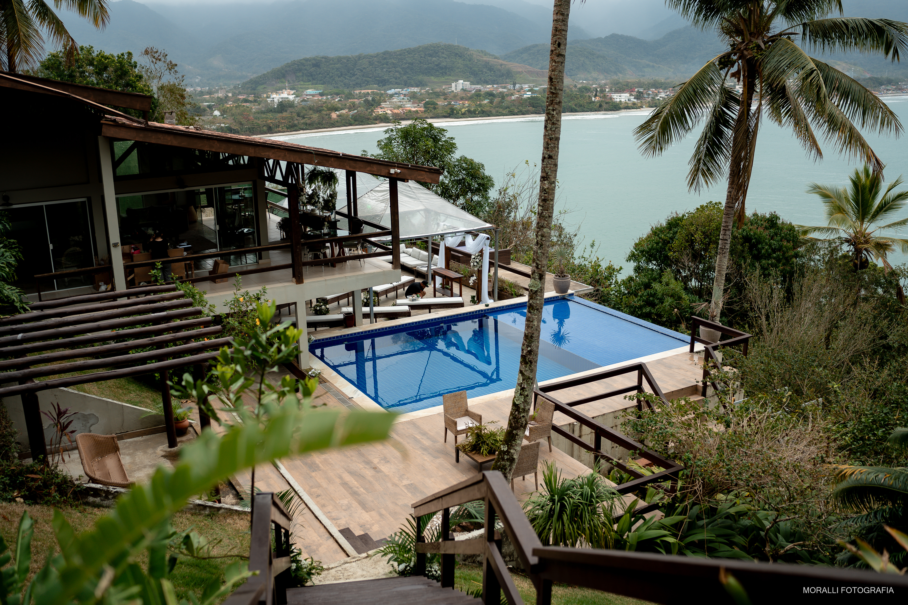
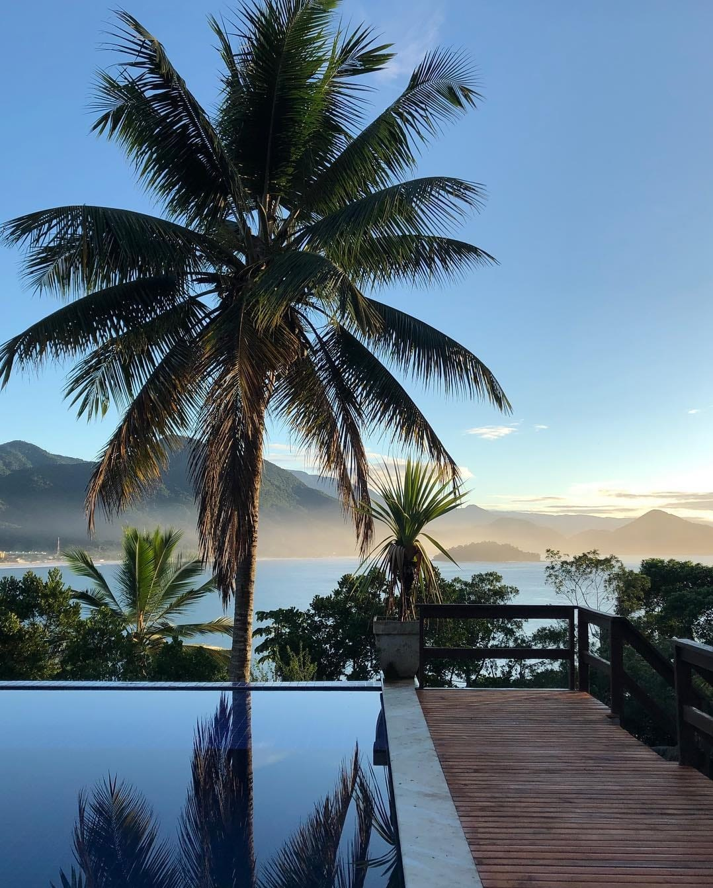
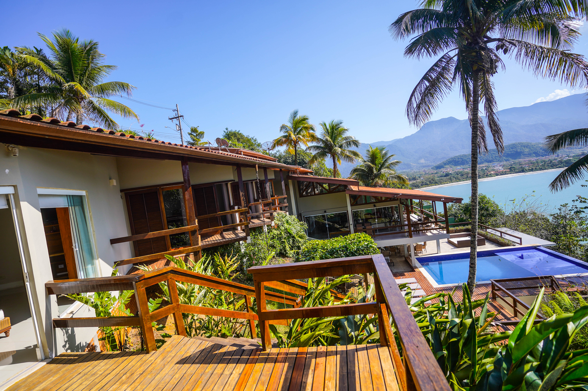
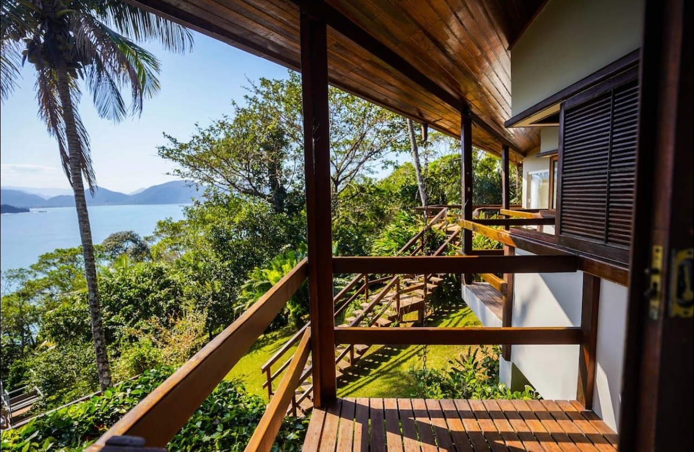
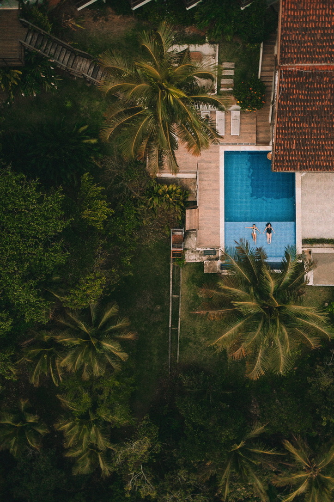
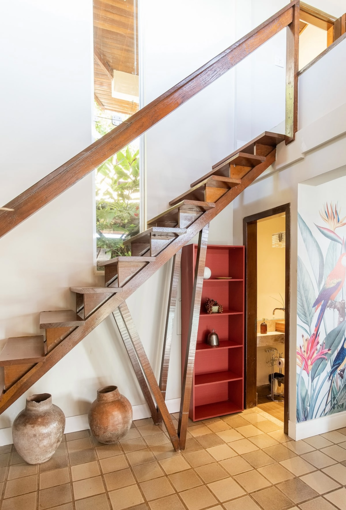
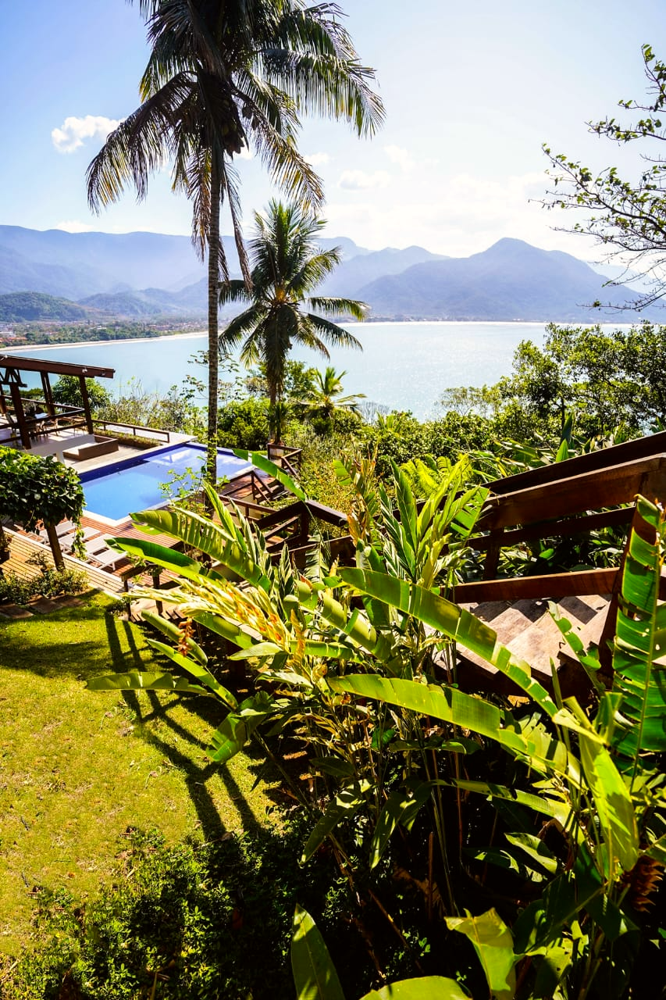

É um lugar para desacelerar. Para acordar com o mar à frente. Para cozinhar juntos, celebrar, reunir pessoas — ou simplesmente não precisar estar em outro lugar por alguns dias.
A Casa Caçandoca foi pensada para transformar estadias em experiências compartilhadas, entre a Mata Atlântica preservada e a Praia da Caçandoca, em Ubatuba.
Uma mesma casa. Três caminhos diferentes.

Para celebrar perto de quem realmente importa, num cenário que acompanha o mar em cada nível da casa.
Conhecer casamentos →
Cinco suítes com vista para o mar e para a piscina. Uma casa para viver a viagem no seu próprio ritmo.
Conhecer a hospedagem →
Um novo cenário para tirar a equipe do automático. Estamos estruturando essa experiência.
Quero saber mais →A Caçandoca não foi construída para competir com a paisagem. Foi pensada para fazer parte dela.


A anfitriã
Comecei o projeto Casa Caçandoca em 2019, depois de alguns anos viajando e trabalhando em diferentes meios de hospedagem pelo mundo. Hoje conduzo a casa de perto — do primeiro contato ao dia da sua estadia — com a Patricia à frente da experiência de cada casamento.
Estamos por perto para acompanhar cada estadia.
Uma casa para viver no seu próprio ritmo.
Uma estrutura pensada para receber bem.
Dicas e caminhos de quem conhece a região.
Arraste para o lado.




Conte pra gente qual desses caminhos é o seu.
Uma casa entre a mata e o mar, na Praia da Caçandoca, Ubatuba — SP.
Endereço
Praia da Caçandoca
Ubatuba — SP, Brasil
© Casa Caçandoca. Todos os direitos reservados.
Feito por
@edhen.studiobrand